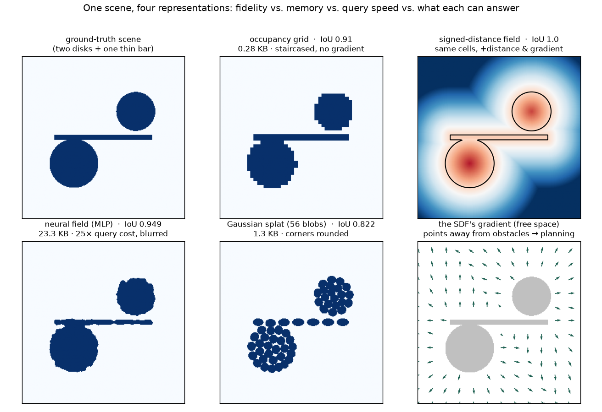

Before a robot can plan or perceive, it has to STORE the world somehow. The same 2D scene — two disks and one thin bar — is built four ways: a dense occupancy grid, a signed-distance field, a neural field (a NeRF-style MLP), and a Gaussian splat. Each is really constructed and measured against the identical ground truth, exposing the tradeoff none of them escapes: memory vs. query speed vs. fidelity vs. what you can even ask it.
The rule: pick the representation for the question, not by reputation. Store one scene four ways and you get four different answers to ‘how much memory, how fast to query, how faithful, and what can you even ask it?’ — and the winner flips with resolution and dimension. A grid is a cheap, fast lookup that staircases; an SDF spends floats to buy the gradient planning needs; a neural field trades query speed for resolution-independence; splats trade sharp corners for compact appearance.

| method | reconstruction (IoU) | memory · what it can answer |
|---|---|---|
| Occupancy grid dense array of 0/1 cells | ✓ IoU 0.91 | 0.28 KB · O(1) lookup, 0.23 ms |
| Signed-distance field each cell = distance to surface | ✓ IoU 1.0 | 9 KB · +gradient (clearance & push-dir) |
| Neural field (MLP) a NeRF-style network (x,y)→occupancy | ✓ IoU 0.95 | ✗ 23 KB, ~25× query cost |
| Gaussian splat scene as a sum of blobs | ✗ IoU 0.82 | 1.3 KB · +appearance, explicit |
The classic robotics map: chop space into a 48×48 array and mark each cell occupied or free. A query is a single array index; the whole thing bit-packs to almost nothing.
Bit-packed to 0.28 KB — the smallest of the four, not the largest — and the fastest to ask: 20,000 queries in 0.23 ms, a pure O(1) lookup. IoU 0.91 against the 256×256 truth.
Store, in each cell, the signed distance to the nearest surface — negative inside, zero on the boundary, positive outside. The surface is the exact zero-crossing, and the field's slope points straight away from obstacles.
Same 48×48 cells, now floats: 9 KB, about 32× the bit-grid. In return the surface is exact (IoU 1.0) and every cell carries a gradient — at a free point just below the lower disk it returns clearance 0.07 and a push-direction, with the eikonal property |∇SDF|≈1 holding across 99.6% of free space. That gradient is exactly what a planner descends.
Replace the array with a tiny network: a positional-encoded 2→64→64→1 MLP trained on 6000 sampled points. It is continuous and resolution-free — you can query it at any point, at any zoom.
With 5953 parameters it reconstructs the fine detail better than the grid's staircase (IoU 0.95 vs 0.91), smoothly and at any resolution.
Represent the occupied region as 56 2D Gaussian blobs (k-means centers, per-cluster covariance). Explicit and editable — you can move a single blob — and each blob can carry a color, so appearance comes for free.
Just 1.3 KB for 56 blobs: compact, explicit, and natively carrying appearance, which the grid and SDF cannot.
scripts/representation_zoo_experiments.py.